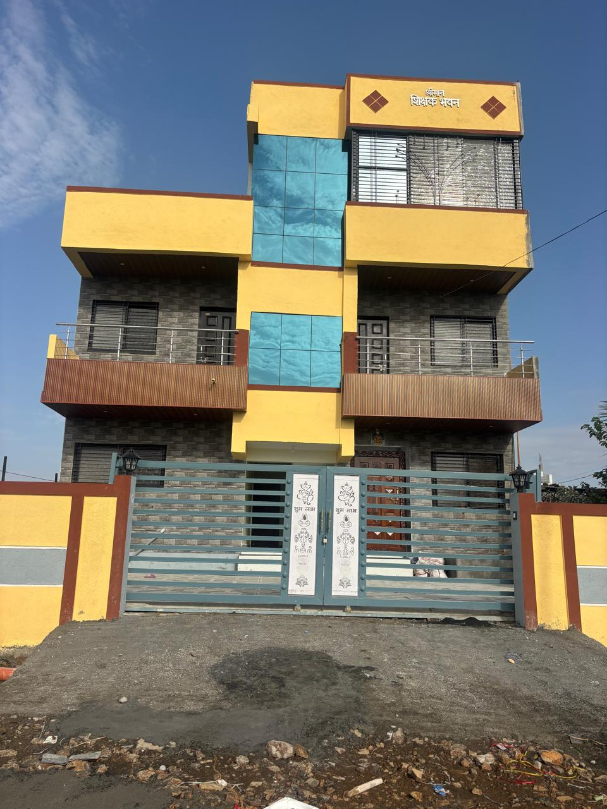

Shikshak Bhavan
Shrimaan
Shikshak Bhavan
01 — 01
01 / आमचा निवास
आमचा निवास
श्री स्वामी समर्थ मंदिराच्या दर्शनासाठी येणाऱ्या स्वामी भक्तांसाठी श्रीमान शिक्षक भवन हे शांत, स्वच्छ आणि आरामदायी निवासस्थान आहे. मंदिराच्या मागे, समर्थ विहार, गाणगापूर रोड, अक्कलकोट येथे सुविधाजनक ठिकाणी असलेले हे भवन भक्तांच्या मुक्कामासाठी उत्तम सोय उपलब्ध करून देते.
छायाचित्र लवकरच
◇छायाचित्र लवकरच
◇छायाचित्र लवकरच
◇02 / व्हिडिओ झलक
श्रीमान शिक्षक भवनाची
क्षणचित्रे
02 / The Spaces
A collection of places
under one roof.
The
Residence
View
02Shared
Moments
View
A stay with a sense of place
Come in.
Settle slowly.
03 / Gallery
Seen
in passing.
Until more photographs arrive, this is a first glimpse of the house.
04 / Enquiries